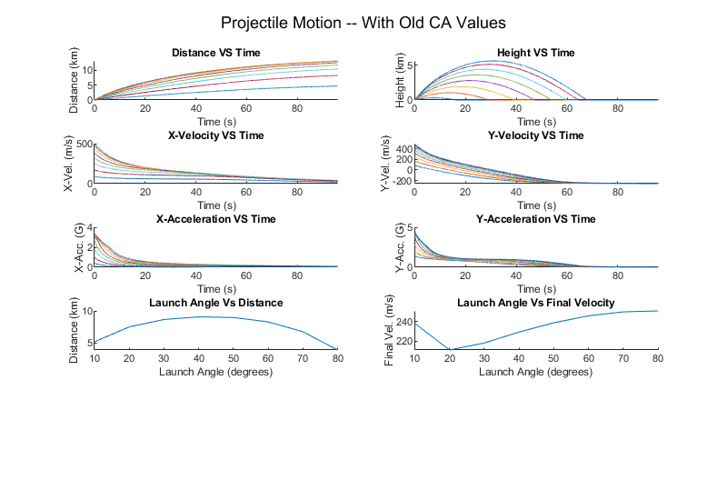
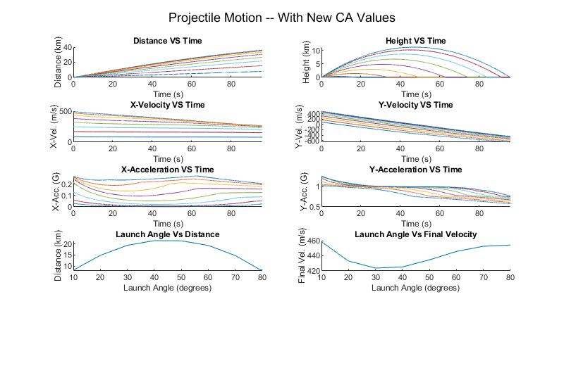

SIM_RUNTIME = 105;
INC = 0.01;
v_o = 500;
diameter = 0.3;
m = 250;
total_points = floor(SIM_RUNTIME/INC);
A = pi()*(diameter/2)^2;
angles = 10:10:80;
dis_x_Old = zeros(8, total_points);
dis_y_Old = zeros(8, total_points);
vel_x_Old = zeros(8, total_points);
vel_y_Old = zeros(8, total_points);
acc_x_Old = zeros(8, total_points);
acc_y_Old = zeros(8, total_points);
timeOld = zeros(8, total_points);
distanceFinal_Old = zeros(1,8);
velFinal_Old = zeros(1,8);
for i = 1:8
angle = i*10;
[x_a_Old, y_a_Old, x_v_Old, y_v_Old, x_x_Old, y_x_Old, time_Old, timef_Old, distancef_Old, velf_Old] = PM_withAirResistance_old(m, A, v_o, angle, INC, SIM_RUNTIME);
dis_x_Old(i,:) = x_x_Old;
dis_y_Old(i,:) = y_x_Old;
vel_x_Old(i,:) = x_v_Old;
vel_y_Old(i,:) = y_v_Old;
acc_x_Old(i,:) = x_a_Old;
acc_y_Old(i,:) = y_a_Old;
timeOld(i,:) = time_Old;
distanceFinal_Old(:,i) = distancef_Old;
velFinal_Old(:,i) = velf_Old;
if(distancef_Old > maxDistanceD)
maxDistanceD = distancef_Old;
end
if(timef_Old > maxTimeD)
maxTimeD = timef_Old;
end
end
fig1 = figure(1);
set(fig1, 'Position', [0 0 800 550])
subPlotX = 2;
subPlotY = 5;
subplot(subPlotX,subPlotY,1);
sgtitle("Projectile Motion -- With Old CA Values");
plotData(timeOld, dis_x_Old/1000, "Distance VS Time", "Time (s)", "Distance (km)",subPlotX, subPlotY, 1,0,maxTimeD);
plotData(timeOld, dis_y_Old/1000, "Height VS Time", "Time (s)", "Height (km)", subPlotX,subPlotY,2,0,maxTimeD)
plotData(timeOld, vel_x_Old, "X-Velocity VS Time", "Time (s)", "X-Vel. (m/s)", subPlotX,subPlotY,3,0,maxTimeD);
plotData(timeOld, vel_y_Old, "Y-Velocity VS Time", "Time (s)", "Y-Vel. (m/s)", subPlotX,subPlotY,4,0,maxTimeD);
plotData(timeOld, acc_x_Old/-9.8, "X-Acceleration VS Time", "Time (s)", "X-Acc. (G)",subPlotX,subPlotY,5,0,maxTimeD);
plotData(timeOld, acc_y_Old/-9.8, "Y-Acceleration VS Time", "Time (s)", "Y-Acc. (G)",subPlotX,subPlotY,6,0,maxTimeD);
plotData(angles, distanceFinal_Old/1000, "Launch Angle Vs Distance", "Launch Angle (degrees)", "Distance (km)", subPlotX, subPlotY, 7, 10, inf);
plotData(angles, velFinal_Old, "Launch Angle Vs Final Velocity", "Launch Angle (degrees)", "Final Vel. (m/s)", subPlotX, subPlotY, 8, 10, inf);
dis_x_Drag = zeros(8, total_points);
dis_y_Drag = zeros(8, total_points);
vel_x_Drag = zeros(8, total_points);
vel_y_Drag = zeros(8, total_points);
acc_x_Drag = zeros(8, total_points);
acc_y_Drag = zeros(8, total_points);
timeDrag = zeros(8, total_points);
distanceFinal_Drag = zeros(1,8);
velFinal_Drag = zeros(1,8);
for i = 1:8
angle = i*10;
[x_a_Drag, y_a_Drag, x_v_Drag, y_v_Drag, x_x_Drag, y_x_Drag, time_Drag, timef_Drag, distancef_Drag, velf_Drag] = PM_withAirResistance(m, A, v_o, angle, INC, SIM_RUNTIME);
dis_x_Drag(i,:) = x_x_Drag;
dis_y_Drag(i,:) = y_x_Drag;
vel_x_Drag(i,:) = x_v_Drag;
vel_y_Drag(i,:) = y_v_Drag;
acc_x_Drag(i,:) = x_a_Drag;
acc_y_Drag(i,:) = y_a_Drag;
timeDrag(i,:) = time_Drag;
distanceFinal_Drag(:,i) = distancef_Drag;
velFinal_Drag(:,i) = velf_Drag;
if(distancef_Drag > maxDistanceD)
maxDistanceD = distancef_Drag;
end
if(timef_Drag > maxTimeD)
maxTimeD = timef_Drag;
end
end
fig2 = figure(2);
set(fig2, 'Position', [800 0 800 550])
subPlotX = 2;
subPlotY = 5;
subplot(subPlotX,subPlotY,1);
sgtitle("Projectile Motion -- With New CA Values");
plotData(timeDrag, dis_x_Drag/1000, "Distance VS Time", "Time (s)", "Distance (km)",subPlotX, subPlotY, 1,0,maxTimeD);
plotData(timeDrag, dis_y_Drag/1000, "Height VS Time", "Time (s)", "Height (km)", subPlotX,subPlotY,2,0,maxTimeD)
plotData(timeDrag, vel_x_Drag, "X-Velocity VS Time", "Time (s)", "X-Vel. (m/s)", subPlotX,subPlotY,3,0,maxTimeD);
plotData(timeDrag, vel_y_Drag, "Y-Velocity VS Time", "Time (s)", "Y-Vel. (m/s)", subPlotX,subPlotY,4,0,maxTimeD);
plotData(timeDrag, acc_x_Drag/-9.8, "X-Acceleration VS Time", "Time (s)", "X-Acc. (G)",subPlotX,subPlotY,5,0,maxTimeD);
plotData(timeDrag, acc_y_Drag/-9.8, "Y-Acceleration VS Time", "Time (s)", "Y-Acc. (G)",subPlotX,subPlotY,6,0,maxTimeD);
plotData(angles, distanceFinal_Drag/1000, "Launch Angle Vs Distance", "Launch Angle (degrees)", "Distance (km)", subPlotX, subPlotY, 7, 10, inf);
plotData(angles, velFinal_Drag, "Launch Angle Vs Final Velocity", "Launch Angle (degrees)", "Final Vel. (m/s)", subPlotX, subPlotY, 8, 10, inf);
function plotData(xData, yData, name, xl, yl,subX, subY, POS,xPosMin, xPosMax)
subplot(subY,subX,POS);
title(name);
xlabel(xl);
ylabel(yl);
hold on
temp = size(xData);
ySize = temp(1);
for i = 1:ySize
data_x = xData(i, :);
data_y = yData(i, :);
plot(data_x, data_y);
end
hold off
xlim([xPosMin, xPosMax]);
end
 